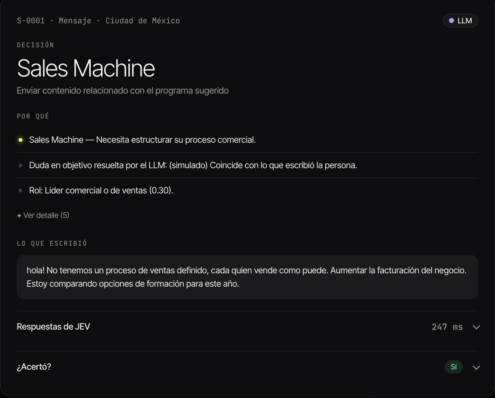
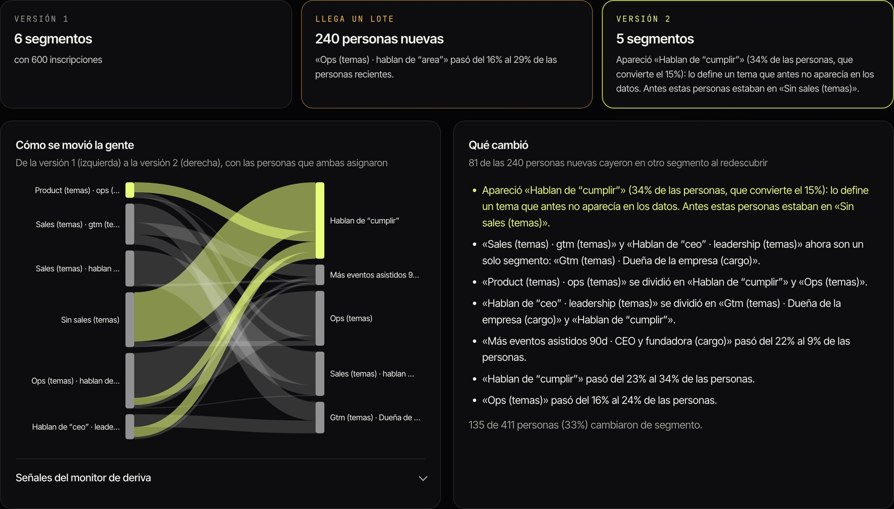
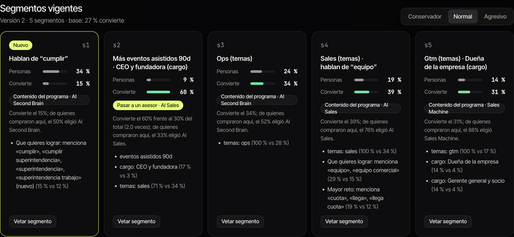
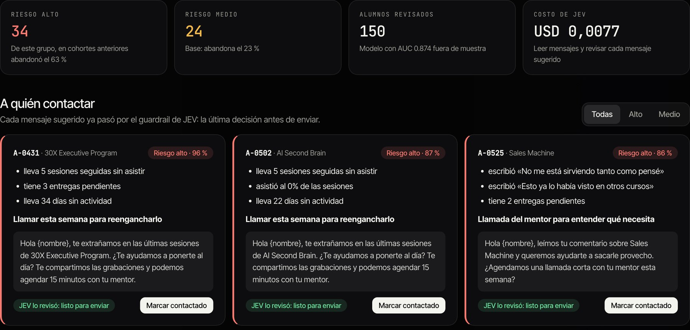
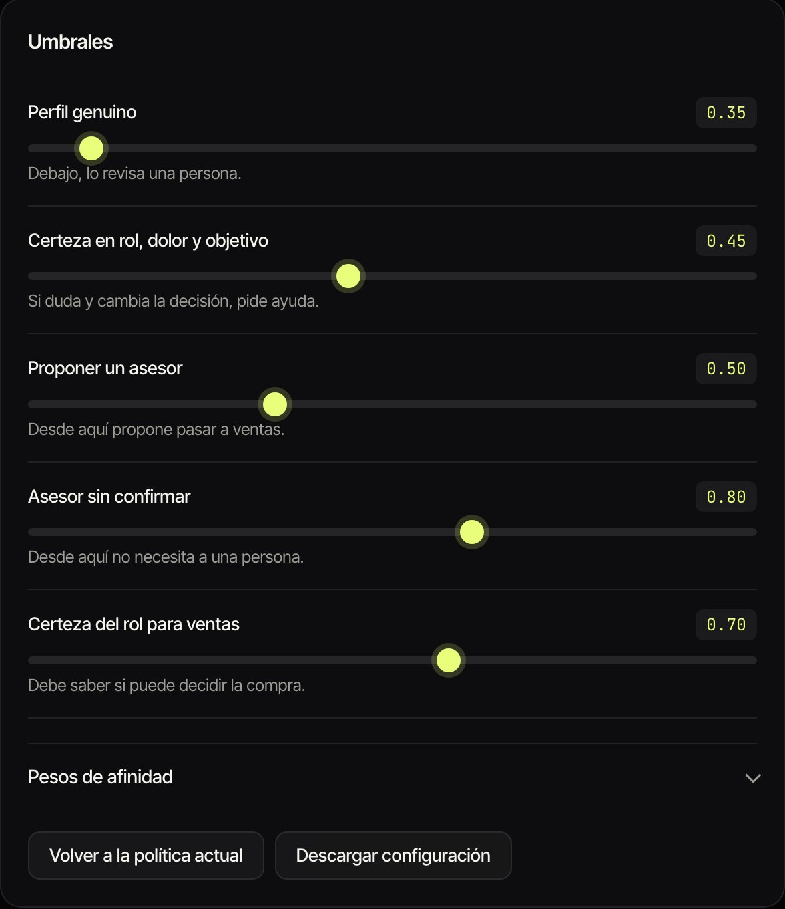

Pálpito ubica a cada persona que llega a 30X según su perfil y el momento de su empresa, la reubica cuando su situación cambia, dice qué contenido o propuesta debe recibir y avisa qué alumno está en riesgo de abandonar un programa. JEV (TypeSafe AI) toma los juicios rápidos, las reglas de 30X deciden y una persona confirma lo delicado.
Que cualquier persona que entra, por ejemplo al inscribirse a un evento en Luma, quede en un segmento según su perfil y el momento de su empresa; que el segmento se recalcule cada vez que su situación cambia, y que el sistema diga qué contenido o propuesta debería recibir.
Que con la asistencia, las entregas y la actividad de cada alumno, JEV estime quién está en riesgo de abandonar un programa, para que el equipo lo contacte a tiempo.
«Hoy nuestros segmentos son estáticos.»
Y eso cuesta en cuatro lugares:acierta la clasificación actual en qué le duele y qué busca cada persona (81 % en rol)
no declara qué le duele; 73 % no dice su rol
recibe lo del día que se inscribió, aunque su empresa ya cambió
cuando alguien nota que el alumno dejó de asistir, ya decidió irse
| Trabajo | Resultado | Fuente |
|---|---|---|
| Clasificar bien | 99 / 100 / 99 % de acierto en rol, dolor y objetivo. Hoy: 81 / 55 / 55 % | JEV real |
| El contenido correcto | Detecta el 86 % de los cambios de segmento (precisión 74 %) y cambia la propuesta con ellos | JEV real |
| Llegar a tiempo | Cada semana, a qué alumno llamar, por qué y con qué mensaje. El grupo de riesgo alto abandonó el 63 % frente al 23 % de la base | Demo |
| Liberar al equipo | 94 % de las decisiones sin intervención humana (281 de 300), 96,4 % correctas | JEV real |
| Cero errores graves | 0 personas a ventas sin estar listas · 0 inscripciones trampa procesadas solas | JEV real |
| Costo | USD 0,07 por 1.000 decisiones, 268 ms por persona: ~180 veces más barato que un LLM | JEV real |
JEV real medido con jev-1.13.0 sobre 300 inscripciones sintéticas con las proporciones de 30X. Demo motor local con datos sintéticos: muestra la mecánica. Todo se confirma en el piloto con una muestra real. Fuente del diagnóstico: 697 perfiles anonimizados de 30X, proporcionales a una base de ~32.300 personas.
| Momento | Lo que escribe o hace | Hoy | Con Pálpito |
|---|---|---|---|
| Día 0 · se inscribe en Luma | «No tenemos proceso de ventas, todo depende de referidos» | Queda en un segmento, para siempre | Sales Machine · recibe contenido del programa |
| Día 7 · responde un correo | «¿Cuánto cuesta? ¿Hablamos esta semana?» | Nadie lo nota | Lista para conversar · pasa a un asesor con la nota escrita |
| Día 20 · asiste a un taller | Sin escribir nada | No cuenta | Compromiso alto · sube su prioridad (en código, sin costo) |
| Día 45 · cambia de cargo | «Ahora soy la CEO de la compañía» | Le siguen ofreciendo lo mismo | Decisora · Inmersión Ejecutiva |
| Pregunta | Respuesta |
|---|---|
| ¿Qué rol tiene? | Una de 7 (fundador/CEO, C-level, líder comercial…) |
| ¿Describe un problema? | Sí / no, con probabilidad |
| ¿Cuál es su problema? | Uno de los 9 dolores de 30X, o ninguno |
| ¿Qué quiere lograr? | Uno de los 10 objetivos de 30X, u otro |
| ¿Qué tan lista está? | Sin intención · explorando · evaluando · lista |
| ¿Es una inscripción real? | Sí / no (frena spam e instrucciones coladas) |
Las reglas de 30X convierten las respuestas en afinidad, programa (Inmersión Ejecutiva, Sales Machine, Hardcore AI, AI Sales o ninguno) y acción: asesor, contenido del programa, contenido general o revisión.
| Evento | Qué hace | Costo |
|---|---|---|
| Correo, encuesta o cargo nuevo | JEV vuelve a leer | ≈ USD 0,00007 |
| Asiste a un evento | Recalcula en código | USD 0 |
| Dato de más de 30 días | Caduca y se vuelve a preguntar | ≈ USD 0,00007 |
Los hechos se guardan tal cual; lo que infiere JEV lleva fecha y vence. Cada cambio queda en el historial con el evento que lo causó.
Si JEV duda entre «gerente» y «director» pero ambas opciones llevan al mismo programa y acción, actúa solo.

Pantalla · Decisiones. Cada persona con su programa, el siguiente paso, el porqué en frases cortas, lo que escribió y la respuesta de JEV con su latencia (247 ms). Prototipo con datos sintéticos.
Personas que hablan de cumplir con la Superintendencia. Nadie lo buscaba.
34 % de la base · 64 % llegó en el último lote · 81 de 240 personas nuevas cambiaron de segmento, cada una con su porqué. Para 30X: una señal temprana de contenido, campaña o programa.

Pantalla · Segmentos. Versión 1 con 6 segmentos, llega un lote de 240 personas, el monitor detecta deriva y la versión 2 queda con 5. El diagrama muestra cómo se movió la gente y, a la derecha, qué cambió en palabras.

Pantalla · Segmentos vigentes. Cada segmento con su tamaño, cuánto convierte y qué recibe (por ejemplo, «Pasar a un asesor · AI Sales» para el que convierte el doble). 30X elige el nivel de riesgo: conservador, normal o agresivo, y puede vetar un segmento.
Demo 600 inscripciones sintéticas más un lote de 240, con el motor local. Costo estimado con JEV real: ≈ USD 0,06 por descubrimiento y ≈ USD 0,71 por cada 10.000 personas asignadas.

Pantalla · Alertas. 34 alumnos en riesgo alto y 24 en medio en una cohorte de 150. Del grupo de riesgo alto, en cohortes anteriores abandonó el 63 % (base: 23 %). Modelo con AUC 0,874 fuera de muestra, entrenado con 390 alumnos. Costo de JEV: USD 0,0077. Demo
| Situación | Umbral | Qué pasa |
|---|---|---|
| La inscripción no parece real | p < 0,35 | Una persona revisa; el LLM no la toca |
| Duda en rol, dolor u objetivo que cambia la decisión | certeza < 0,45 | Revisa el LLM; si duda, una persona |
| Intención de compra no concluyente | 0,5 a 0,8 | Una persona confirma antes de ventas |
| Rol incierto antes de ventas | certeza < 0,7 | Una persona confirma |
| Mensaje con precios, fechas o promesas inventadas | Guardrail | Bloqueado o a revisión |
| Todo lo demás | Actúa solo y lo registra |
El umbral de perfil real se calibró con JEV real: las trampas nunca pasan de 0,10 y las inscripciones reales están sobre 0,52. Guardrail: 0 fugas en 12 mensajes riesgosos y 0 falsas alarmas en 8 buenos. El LLM nunca pasa a nadie a ventas por su cuenta.

Pantalla · Reglas. Se mueve un umbral y todas las decisiones se recalculan al instante, sin volver a llamar a JEV.
Alertas: asistencia, entregas y actividad → el código cuenta y JEV lee → riesgo aprendido de cohortes terminadas → alerta con razones y mensaje → guardrail. Principios: conteos y fechas en código, nunca en JEV; opción «sin dato» u «otro» en cada pregunta; nombre y correo nunca se envían a JEV; corre fuera de los sistemas de 30X.
| Comercial | Cola de dudas y pases a ventas |
| Académico y mentores | Alertas de la semana y contacto |
| Growth | Umbrales, pesos y nivel de riesgo |
| Contenido | Qué recibe cada programa y segmento |
| Datos | Evaluación y calibración mensual |
| 1.000 decisiones | USD 0,07 |
| Toda la base (~32.300) | ≈ USD 2,3 |
| Toda la base, a diario, un año | ≈ USD 825 vs ≈ 151.000 con un LLM* |
| Alertas, cohorte de 150 | ≈ USD 0,008 |
*Estimado con la misma entrada y ~300 palabras de respuesta por persona.
| Métrica | Meta | Hoy |
|---|---|---|
| Acierto rol / dolor / objetivo | > 81 / 55 / 55 % | 99 / 100 / 99 % |
| Pases a ventas indebidos | 0 | 0 |
| Trampas procesadas solas | 0 | 0 |
| Decisiones sin intervención | Con 30X | 94 % |
| Cambios de segmento detectados | Con 30X | 86 % |
| Alumnos en riesgo contactados a tiempo | Con 30X | En el piloto |
| Abandono con alertas vs. sin alertas | Menor | En el piloto |
| Latencia p95 | < 500 ms | 358 ms |
| Costo por 1.000 | < USD 0,10 | USD 0,07 |
Programas y reglas con el equipo comercial (Achievers aún sin regla).
Con una muestra real, clasifica y marca alertas sin escribirle a nadie; se compara con el equipo.
Contenido y alertas al equipo académico. Ventas sigue con confirmación humana.
Con las métricas de la sección 7, y ajustar.
Límites. Las cifras de JEV real usan inscripciones sintéticas; el texto real es más variado y, con 300 casos y cero errores graves, la tasa real podría llegar hasta 1 %. Segmentos descubiertos y alertas son demo con el motor local. Las descripciones de los programas se infirieron de los datos y deben validarse con 30X.